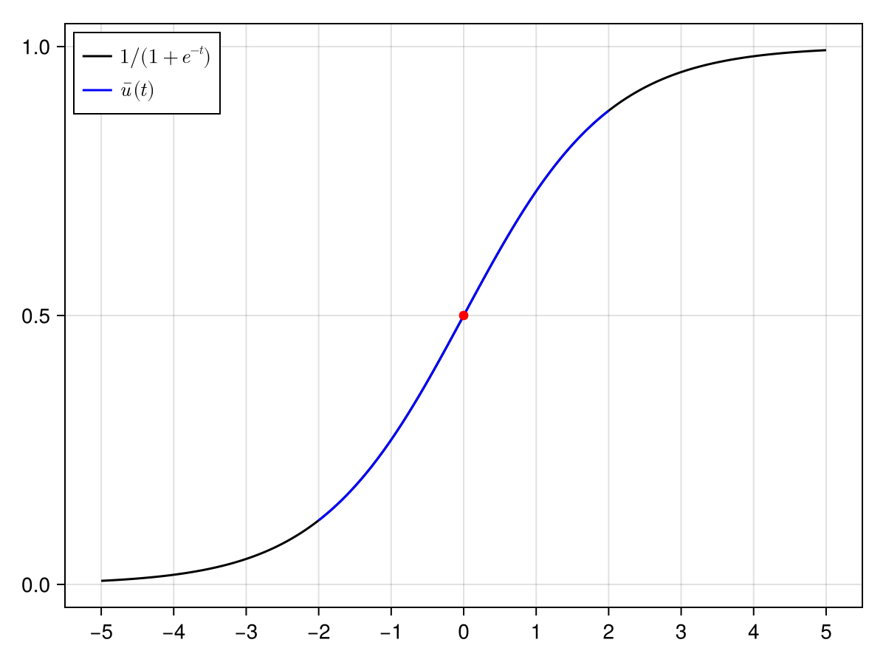

The logistic equation
We prove the existence of a solution of the logistic equation
\[\begin{cases} \displaystyle \dot{u}(t) = u(t)(1 - u(t)), & t \in [-2, 2],\\ u(0) = 1/2. \end{cases}\]
Proves the solution of $u' = u(1-u)$, $u(0) = 1/2$, on $t \in [-2,2]$.
Adds a genuinely infinite-dimensional space: the truncation $\Pi_{\le K}$, the tail $\Pi_{>K}$ that has to be bounded rather than computed, and a geometric weight $\nu$ chosen so that the norm controls the pointwise error on $[-\nu, \nu]$.
Assumes Equilibria of the Lorenz system.
Ingredients unknown: one Taylor sequence (U3) · tail: one projected opnorm, with $A$'s tail equal to the identity (T2) · inverse: $A_K + (I - \Pi)$ (A3) · radius: $Z_2$ is independent of $R$, so $R = \infty$ (Z1) · extras: the integral reformulation (M1).
Tier 2 of 4 — sequences as unknowns · Σ 10 · taylor weighted ivp
Step 1: Formulation
We start by casting the initial value problem into a corresponding zero-finding problem posed on an infinite-dimensional Banach space.
Given $\nu \ge 1$, we consider the Banach space modelling Taylor coefficients of analytic functions on $[-\nu, \nu]$:
\[X_{T, \nu} \bydef \left\{ u(t) = \sum_{k \ge 0} u_k t^k \, : \, \| u \|_{X_{T, \nu}} \bydef \sum_{k \ge 0} |u_k| \nu^k < \infty \right\}.\]
This space is naturally equipped with the Cauchy product $* : X_{T, \nu} \times X_{T, \nu} \to X_{T, \nu}$ given component-wise by, for any $u, w \in X_{T, \nu}$,
\[(u * w)_k \bydef \sum_{l = 0}^k u_{k - l} w_l, \qquad k \ge 0,\]
so that $u(t) w(t) = (u * w)(t)$.
The Banach space $X_{T, \nu}$ is a suitable space to represent a solution of the logistic equation, since it is known that analytic vector fields yield analytic solutions.[1]
It follows that the sequence of coefficients of a Taylor series solving the initial value problem is a zero of the mapping $F : X_{T, \nu} \to X_{T, \nu}$ given by
\[[F(u)](t) \bydef u - \frac{1}{2} - \int_0^t u(s)(1 - u(s)) \, \mathrm{d}s.\]
The mapping $F$ and its Fréchet derivative are implemented as follows:
using RadiiPolynomial
F(u) = u - exact(0.5) - Integral(1) * (u*(exact(1) - u))
DF(u) = exact(I) - Integral(1) * Multiplication(exact(1) - exact(2) * u)Consider the fixed-point operator $T : X_{T, \nu} \to X_{T, \nu}$ defined by
\[T(u) \bydef u - A F(u),\]
where $A : X_{T, \nu} \to X_{T, \nu}$ is an operator corresponding to an approximation of $DF(\num)^{-1}$, for some approximate zero $\num \in X_{T, \nu}$ of $F$.
Step 2: Approximation (floating-point arithmetic)
The approximate zero
We numerically compute an approximate zero by performing a finite-dimensional truncation of the problem and iterating Newton's method.
Consider the truncation operator $\Pi_{\le K} : X_{T, \nu} \to X_{T, \nu}$ given component-wise by
\[(\Pi_{\le K} u)_k \bydef \begin{cases} u_k, & k \le K,\\ 0, & k > K, \end{cases} \qquad \text{for all } u \in X_{T, \nu},\]
as well as the tail operator $\Pi_{> K} \bydef I - \Pi_{\le K}$.
Given an initial guess, the approximate zero is obtained by running Newton's method on the truncated problem, namely $\Pi_{\le K} \circ F \circ \Pi_{\le K}$. For an input u_guess representing an element of $\Pi_{\le K} X_{T, \nu}$, the newton function will automatically perform the truncation $\Pi_{\le K}$:
K = 27
u_guess = zeros(Taylor(K))
u_bar, newton_success = newton(u -> (F(u), DF(u)), u_guess; verbose = true)Newton's method: Inf-norm, tol = 1.0e-12, ϵ = 2.220446049250313e-16, maxiter = 15, convergence criterion: |F(x)| ≤ tol
Iteration |F(x)| |DF(x)\F(x)| ETA (s)
-----------------------------------------------------------
0 | 5.0000e-01 | 5.0000e-01 | 0.0e+00
1 | 2.5000e-01 | 2.5000e-01 | 1.5e-03
2 | 3.1250e-02 | 3.1250e-02 | 9.8e-04
3 | 1.9531e-04 | 1.9187e-04 | 7.6e-04
4 | 4.3208e-09 | 4.2857e-09 | 6.4e-04
5 | 4.2352e-22 | 4.2352e-22 | 5.5e-04The approximate inverse
We proceed to construct the approximate inverse $A \approx DF(\num)^{-1}$ at the numerical approximation u_bar.
Π = Projection(Taylor(K))
A_K_interval = interval(inv(Π * DF(u_bar) * Π))
A_tail = interval(I) - interval(Π)
A_interval = A_K_interval + A_tailStep 3: Bounds (interval arithmetic)
Let $R > 0$. Since $T \in C^2(X_{T, \nu}, X_{T, \nu})$ we use the second-order Radii Polynomial Theorem so that we need to estimate
\[\begin{aligned} Y &\ge \|T(\num) - \num\|_{X_{T, \nu}}, \\ Z_1 &\ge \|DT(\num)\|_{\mathscr{L}(X_{T, \nu}, X_{T, \nu})}, \\ Z_2 &\ge \sup_{u \in B(\num, R)} \|D^2 T(u)\|_{\mathscr{BL}(X_{T, \nu}, X_{T, \nu})}. \end{aligned}\]
After some work, we find
\[\begin{aligned} Y &= \|\Pi_{\le 2K+1} A \Pi_{\le 2K+1} F(\num)\|_{X_{T, \nu}}, \\ Z_1 &= \|\Pi_{\le K+1} - \Pi_{\le 2K+1} A \Pi_{\le 2K+1} DF(\num) \Pi_{\le K+1}\|_{\mathscr{L}(X_{T, \nu}, X_{T, \nu})}, \\ Z_2 &= 2 \nu \max\big( \|\Pi_{\le K} A \Pi_{\le K}\|_{\mathscr{L}(X_{T, \nu}, X_{T, \nu})}, 1\big). \end{aligned}\]
In particular, since $Z_2$ is independent of $R$, we may freely set $R = \infty$.
The computer-assisted proof leading to the a posteriori rigorous error estimate on u_bar is then completed by evaluating the formulas algebraically with interval arithmetic:
u_bar_interval = interval(u_bar)
ν = interval(2)
X_T = Ell1(GeometricWeight(ν))
#- Y bound
Y = norm(A_interval * F(u_bar_interval), X_T)
#- Z₁ bound
Π_Kp1 = Projection(Taylor(K+1))
Z₁ = opnorm(interval(Π_Kp1) - A_interval * DF(u_bar_interval) * Π_Kp1, X_T)
#- Z₂ bound
R = Inf
Z₂ = max(opnorm(A_K_interval, X_T), interval(1)) * ν * interval(2)
# verify the contraction
ie, contraction_success = interval_of_existence(Y, Z₁, Z₂, R; verbose = true)┌ Info: success: interval found
│ Y = [1.99289e-6, 1.9929e-6]_com
│ Z₁ = [0.107132, 0.107133]_com
│ Z₂ = [13.7015, 13.7016]_com
│ R = Inf
│ Δ = [0.797157, 0.797158]_com
└ roots = ([2.23205e-6, 2.23206e-6]_com, [0.130328, 0.130329]_com)Step 4: Conclusion
There is a solution of the initial value problem within inf(ie) of $\num$ in the $X_{T, \nu}$ norm, and it is the only one in that ball. Because $|u(t)| \le \| u \|_{X_{T, \nu}}$ for $|t| \le \nu$, the same number bounds the pointwise error on $[-2, 2]$; and finiteness of the norm means the solution is analytic there.
inf(ie) # smallest error2.232051998824705e-6The following figure[2] shows the numerical approximation of the proven solution in the interval $[-2, 2]$ along with the theoretical solution $t \mapsto (1 + e^{-t})^{-1}$.
using CairoMakie
fig = Figure()
ax = Axis(fig[1,1], xticks = -5:5)
lines!(ax, [Point2f(t, 1/(1+exp(-t))) for t = LinRange(-5, 5, 501)];
color = :black, label = L"1/(1+e^{-t})")
lines!(ax, [Point2f(t, u_bar(t)) for t = LinRange(-2, 2, 501)];
color = :blue, label = L"\bar{u}(t)")
scatter!(ax, Point2f(0, u_bar(0));
color = :red)
axislegend(ax; position = :lt)
fig
- 1A. Hungria, J.-P. Lessard and J. D. Mireles James, Rigorous numerics for analytic solutions of differential equations: the radii polynomial approach, Mathematics of Computation, 85 (2016), 1427-1459.
- 2S. Danisch and J. Krumbiegel, Makie.jl: Flexible high-performance data visualization for Julia, Journal of Open Source Software, 6 (2021), 3349.